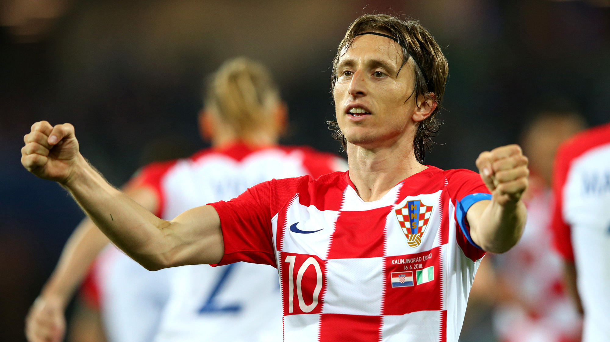

Футбо́л (англ. football от foot «ступня» + ball «мяч») — командный вид спорта, в котором целью является забить мяч в ворота соперника ногами или другими частями тела (кроме рук) большее количество раз, чем команда соперника. В настоящее время самый популярный и массовый вид спорта в мире[1][2][3].
Игрок — футболи́ст.
Есть 17 официальных правил игры, каждое из которых содержит список оговорок и руководящих принципов. Эти правила предназначены для применения на всех уровнях футбола, хотя есть некоторые изменения для таких групп, как юниоры, взрослые, женщины и люди с ограниченными физическими возможностями. Законы очень часто формулировались в общих чертах, которые позволяют упростить их применения в зависимости от характера игры. Правила игры публикуются в ФИФА, но поддерживаются Международным советом футбольных ассоциаций (IFAB)[31].
Каждая команда состоит максимум из одиннадцати игроков (без учета запасных), один из которых должен быть вратарём. Правила неофициальных соревнований могут уменьшить количество игроков, максимум до 7. В позиции на поле, эти позиции не обязательны[32].
ратари являются единственными игроками, которым позволено играть руками при условии: они делают это в пределах штрафной площади у своих собственных ворот. Хотя есть различные
Отдельная футбольная игра называется матч, который в свою очередь состоит из двух таймов по 45 минут. Пауза между первым и вторым таймами составляет 15 минут, в течение которой команды отдыхают, а по её окончании меняются воротами[33].
Цель игры — забить мяч в ворота противника, сделать это как можно большее количество раз и постараться не допустить гола в свои ворота. Матч выигрывает команда, забившая большее количество голов.
В случае, если в течение двух таймов команды забили одинаковое количество голов, то или фиксируется ничья, или победитель выявляется согласно установленному регламенту матча. В этом случае может быть назначено дополнительное время — ещё два тайма по 15 минут каждый. Как правило, между основным и дополнительным временем матча командам предоставляется перерыв. Между дополнительными таймами командам даётся лишь время на смену сторон. Одно время в футболе существовало правило, по которому победителем объявлялась команда, первой забившая гол (правило «золотого гола») или выигрывавшая по окончании любого из дополнительных таймов (правило «серебряного гола»). В настоящий момент дополнительное время либо не играется вовсе, либо играется в полном объёме (2 тайма по 15 минут). Если в течение дополнительного времени победителя выявить не удаётся, проводится серия послематчевых пенальти, не являющихся частью матча: по воротам противника с расстояния 11 метров пробивается по пять ударов разными игроками. Если количество забитых пенальти у обеих команд будет равным, тогда пробиваются по одной паре пенальти, пока не будет выявлен победитель[34].Покрытие для футбольного поля может быть натуральным или искусственным. Травяное покрытие требует дополнительного ухода, а именно полива и удобрения. Травяное покрытие не позволяет проводить более двух игр в неделю. Траву на поле привозят в специальных рулонах дёрна. Очень часто на футбольном поле можно видеть траву двух цветов (полосатое поле), так получается, из-за особенностей ухода за газоном. При стрижке газона машина сначала едет в одну сторону, а затем в другую и трава ложится в разные стороны (разнонаправленная стрижка газона). Делается это для удобства определения расстояний и офсайдов, а также для красоты. Высота травы на футбольном поле обычно составляет 2,5 — 3,5 см. Максимальная скорость мяча в футболе на текущий момент — 214 км/ч. Искусственное покрытие для футбольного поля представляет собой ковёр из синтетического материала. Каждая травинка — это не просто полоска пластмассы, а изделие сложной формы. Для того чтобы искусственный газон был пригоден для игры, его засыпают наполнителем из песка и резиновой крошки.ФИФА и Международный олимпийский комитет используют «футбол», как официальное международное название игры.
Полное англоязычное название игры, «association football» («футбол по правилам Ассоциации»), было выбрано после создания английской Футбольной ассоциации в 1863 году, чтобы отличать эту игру от других разновидностей футбола, существовавших в то время, например регби («rugby football», «футбол по правилам Школы Регби»). Со временем длинные названия вариантов игры стали сокращаться в повседневной речи. Термин «соккер» (англ. soccer) зародился в Англии в 1880-х годах, как сокращение «-soc-» от слова «association» (первые три буквы «ass-» не использовались из-за неблагозвучности) с добавлением суффикса «-er» на оксфордский манер (по аналогии rugby football сокращённо назывался rugger, «раггер»)[4].
В наши дни название «соккер» распространено лишь в ряде англоязычных стран, где продолжают пользоваться популярностью другие разновидности футбола. Например, в Австралии и Новой Зеландии футболом исторически называют австралийский футбол или регби. В Ирландии термин «футбол» относится к гэльскому футболу, поэтому «соккер» употребляется в прессе[5][6]. В ЮАР игра в большинстве известна как «соккер», что выразилось в названии чемпионата ЮАР, «Премьер соккер лига» и стадиона Соккер Сити на котором проходил финал ЧМ-2010. В США и Канаде употребляется термин «соккер», так как футболом называют американский футбол и канадский футбол. В Англии название «соккер» устарело и новые поколения болельщиков теперь считают его пренебрежительным.
Найкраші футболісти 2018:
5.Азар(Клуб:Челсі;Нація:Бельгієць)
Эде́н Мише́ль Аза́р (фр. Eden Michael Hazard; род. 7 января 1991 года, Ла-Лувьер, Бельгия) — бельгийский футболист, атакующий полузащитник и вингер английского клуба «Челси» и сборной Бельгии. Сильными качествами игрока являются креативность, скорость, дриблинг и умение обращаться с мячом[4][5][6]. За свой стиль и манеру влияния на игру сравнивается различными критиками с многократными обладателями главной футбольной награды — «Золотого мяча» Лионелем Месси и Криштиану Роналду[7][8][9][10]. Считается одним из лучших игроков в мире[11][12][13][14][15].
Начал свою карьеру в Бельгии, играя в местных молодежных клубах. В 2005 году переехал во Францию, где Азар смог присоединиться к молодёжной системе «Лилля», в основную команду которого игрок впоследствии и попал. В ноябре 2007 года, будучи шестнадцатилетним игроком дебютировал в составе французского клуба. Под руководством являвшегося в то время главным тренером «Лилля» Руди Гарсии Азар смог стать неотъемлемой частью команды, за пять лет проведя более 190 матчей в составе клуба. В 2009 году стал обладателем звания «Молодой игрок года по версии НПСФ», став первым иностранным игроком, выигравшим данную награду[16]. По окончанию сезона 2009/10 Эден снова получил звание «Молодого игрока года», став первым игроком, выигравшим награду дважды[17]. В этом сезоне бельгиец также был включен в «Команду года по версии НПСФ».
В сезоне 2010/11 в составе «Лилля» выиграл чемпионат и Кубок Франции, и по результатам своих выступлений был признан «Игроком года по версии НПСФ», став самым молодым игроком когда-либо выигрывавшим это награду[18]. Азар был также награждён трофеем «Браво» за свои выступления в этом сезоне[19]. В июне 2012 года, проведя более восьми лет в системе «Лилля», подписал контракт с английским клубом «Челси», где в свой первый же сезон выиграл Лигу Европы и звание «Молодого игрока года по версии ПФА» в своем втором сезоне. В сезоне 2014/15 стал победителем Кубка лиги и чемпионата Англии, на индивидуальном уровне получив награды «Игроку года по версии футболистов ПФА и Ассоциации футбольных журналистов»[20]. Два года спустя Азар выиграл свой второй чемпионский титул в Англии.
На международном уровне бельгиец выступал в командах до 15, 16, 17 и 19 лет, в ноябре 2008 года дебютировав в составе главной команды в товарищеском матче против сборной Люксембурга. Спустя практически три года после своего дебюта Азар забил свой первый гол за сборную, это случилось в октябре 2011 года в матче против сборной Казахстана. С тех пор он провёл за сборную более 90 матчей, сыграв на чемпионате мира 2014 года и Чемпионате Европы 2016 года. На чемпионате мира 2018 года стал капитаном бельгийской сборной и вместе с ней дошёл до третьего места на турнире, это стало лучшим результатом в истории сборной. За своё выступление Азар получил «Серебряный мяч» в качестве второго лучшего игрока турнира.В сезоне 2010/11 Эден выиграл в составе «Лилля» «золотой дубль», а сам Азар стал самым молодым игроком, удостоившимся звания «Игрока года по версии НПСФ»[18]. Азар также стал обладателем трофея «Браво» по версии итальянского журнала Guerin Sportivo как лучший молодой футболист Европы[19]. Начал сезон Эден на позитивной ноте и в первом же его матче отметился забитым мячом. Его гол способствовал победе «Лилля» со счётом 2:0 над сербским клубом «Севойно» в первом матче третьего квалификационного раунда Лиги Европы[72]. 27 августа он забил свой второй гол в еврокубках в карьере, отличившись в ответном матче раунда плей-офф против бельгийского «Генка». Это был четвёртый гол «Лилля» в этом матче, окончившимся со счётом 4:2[73]. По результатам двух матчей с общим счётом 6:3 «Лилль» вышел в групповой этап Лиги Европы. 22 октября Азар забил гол в победном матче «Лилля» над итальянским клубом «Дженоа» со счётом 3:0, бельгиец отличился на 84-й минуте, после выхода на замену за 10 минут до конца матча. Получив мяч на левом фланге, Азар, обойдя полузащитников с помощью дриблинга, поразил ворота соперника с 16 метров[74][75]. Через месяц Эден сыграл важную роль в победе над чешской «Славией» со счётом 5:1. В этом матче он принял непосредственное участие в первом голе, пройдя оборону противника, Азар вошёл в штрафную площадь и пробил по воротам, но мяч залетел в ворота «Славии» отскочив от своего же защитника Марека Сухи[76]. 20 декабря Эден отличился результативными действиями в чемпионате, забив гол и отдав две голевые передачи в матче против «Ле-Мана»[77]. 30 января Азар забил единственный гол в ворота главного противника «Лилля» по Северному дерби — «Лансу»[78].
В сезоне 2011/12 он вновь был признан «Игроком года». Этого звания Азар удостоился второй раз подряд, сравнявшись по этому показателю с Педру Паулетой. Примечательно, что в следующие два года с достижением Азара и Паулеты сравнялся ещё один игрок — шведский нападающий Златан Ибрагимович. Звания «Игрока года» Эден удостоился, имея в своём активе 20 мячей и 18 голевых передач в чемпионате за «Лилль». В июне 2012 года, после восьми проведённых лет в молодёжных и основной команде «Лилля», Азар покинул клуб на фоне многочисленных трансферных слухов и присоединился к английскому клубу «Челси»[79][80]. На своем официальном аккаунте в Twitter, Эден оставил пост со словами: «Я присоединяюсь к победителям Лиги чемпионов»[81]. Именно «Челси» в том сезоне стали обладателями этого трофея, в финале переиграв в после матчевой серии пенальти мюнхенскую «Баварию».
4.Лука Модрич(Клуб:Реал Мадрид;Нація:Хорватія)
Лу́ка Мо́дрич (хорв. Luka Modrić; род. 9 сентября 1985, Задар, СФРЮ) — хорватский футболист, полузащитник испанского клуба «Реал Мадрид», капитан национальной сборной Хорватии. Участник трёх чемпионатов мира и трёх чемпионатов Европы.
Один из лучших полузащитников своего поколения. В 2018 году стал лучшим игроком чемпионата мира, а также удостоился званий футболиста года по версии ФИФА и лучшего футболиста сезона по версии УЕФА и стал обладателем «Золотого мяча». 1 июля 2002 года в возрасте 16 лет Лука Модрич подписал контракт с загребским «Динамо»[2]. Первый сезон Лука проводит в молодёжном составе. 29 июля 2003 года руководство «Динамо» отдаёт Луку в аренду в мостарский клуб «Зриньски»[3]. Именно в сезоне 2003/04 чемпионата Боснии и Герцеговины Лука впервые демонстрирует свой универсальный стиль игры и становится «Лучшим игроком» боснийской Премьер-лиги[4]. 13 июля 2004 года Модрич, также на правах аренды, переходит в хорватский «Интер (Запрешич)»[5]. В составе клуба он провёл один сезон и помог команде выиграть серебряные медали чемпионата Хорватии и добыть путевку в Кубок УЕФА. По итогам сезона Лука получил звание «Футбольная надежда Хорватии»[4]. В начале 2005 года руководство «Динамо» возвращает Модрича в состав своего клуба. Лука быстро сумел завоевать место в основном составе «Динамо». В последовавшие за этим три сезона был ключевым игроком загребской команды, сыграв 112 матчей и отметившись 31 голом. В 2007 году команда хорвата выиграла национальный чемпионат и Кубок Хорватии, а сам Лука удостоился звания лучшего футболиста Хорватии. В это же время «Динамо» неплохо себя зарекомендовало в рамках Кубке УЕФА, сумев дойти до четвертьфинала в 2008 году. Яркая игра Модрича заинтересовала ряд европейских грандов.
Антуа́н Гризма́нн[5] (фр. Antoine Griezmann; 21 марта 1991 год, Макон, Франция) — французский футболист, нападающий клуба «Атлетико Мадрид» и сборной Франции. В составе национальной сборной — чемпион мира 2018 и серебряный призёр чемпионата Европы 2016. Признавался лучшим игроком чемпионата Европы 2016.Происхождение — эльзасско-португальское — мать Антуана по национальности португалка[6][7]. Свою футбольную карьеру он, как и его отец, Ален Гризманн, начал в родном городе. Однако выступление в провинциальной команде не могло способствовать развитию игрока. Поэтому отец возил своего сына на просмотры в более известные коллективы. Но, обладающий скромными антропометрическими данными и подверженный частым болезням, Антуан получал отказ во всех молодёжных академиях.
Лишь в 14 лет он получил шанс показать себя широкой публике. В 2005 году Гризманн в составе «Монпелье» принял участие в товарищеском матче против молодёжной команды «Пари Сен-Жермен». Продемонстрированной игрой футболист заинтересовал скаутов клуба «Реал Сосьедад». Антуана пригласили на недельный просмотр в Сан-Себастьян. Но окончательно убедиться в способностях игрока баски смогли лишь спустя две недели усиленных тренировок.Из-за игры в Испании Гризманн долгое время оставался вне поля зрения тренеров молодёжной сборной Франции. Вызов в национальную команду он получил лишь в феврале 2010 года. Дебют вышел успешным: в матче с Украиной Антуан забил победный гол на 88-й минуте.
7 июня 2010 года Гризманн был приглашён в сборную для участия в чемпионате Европы (до 19 лет). На этом турнире Антуан отметился двумя забитыми мячами. А Франция в итоге стала чемпионом на родной земле, обыграв в финале национальную команду Испании со счётом 2:1.
Впервые за сборную Франции Антуан сыграл 5 марта 2014 года против сборной Нидерландов (2:0), выйдя на поле с первых минут и был заменён на 68 минуте. 1 мая 2014 года в товарищеской игре против сборной Парагвая (1:1) забил свой первый гол за национальную команду. Отметился дублем в разгромном матче против сборной Ямайки 8:0.
На чемпионате мира 2014 года провёл 5 матчей. Забил один гол в 1/8 финала в матче со сборной Нигерии — после подачи углового на 90 минуте матча мяч принял Карим Бензема, отдал длинную передачу на Антуана, который пяткой красиво закатил мяч в ворота мимо вратаря и одного из защитников, сам матч закончился со счётом 2:0 в пользу французов. В четвертьфинале сборная Франции со счётом 0:1 проиграла будущим триумфаторам мундиаля Германии.
Выступая в составе сборной на чемпионате Европы 2016, стал лучшим игроком и бомбардиром турнира. Забив шесть голов в одном турнире, Гризманн вышел на второе место по этому показателю после Мишеля Платини[12].28 июля 2014 года официальный сайт «Атлетико Мадрид» сообщил о том, что клубы договорились о переходе Гризманна. Сумма трансфера предположительно составила 30 млн. евро[10]. 1 ноября 2014 года оформил свой первый дубль за клуб, отличившись в матче против «Кордовы». В «Атлетико», в отличие от «Реал Сосьедад», Антуан стал играть на более атакующей позиции, образовав с Марио Манджукичем ударный дуэт. С первых же матчей французу удалось стать лидером команды и одним из самых результативных игроков, регулярно отмечаясь забитыми мячами и голевыми передачами. В сезоне 2014/15 в матче 16-го тура с «Атлетиком» из Бильбао Гризманн оформил свой первый хет-трик за клуб, матч закончился со счётом 4:1 в пользу мадридского «Атлетико». Гризманн забил один из голов в драматичном матче с мадридским «Реалом», встреча закончилась со счётом 4:0 в пользу «матрасников».
В следующем сезоне Антуан по прежнему являлся лучшим бомбардиром команды и помог ей дойти до финала Лиги чемпионов, именно благодаря его голам «Атлетико» сумел выбить из турнира «Барселону» и «Баварию». В финале соперником «матрасников» стал мадридский «Реал», в этом матче Гризманн не сумел реализовать пенальти, а победа в итоге досталась «сливочным», которые оказались сильнее в серии пенальти (в ней свой удар Гризманн реализовал). Заслуги француза по итогам сезона (включая удачное выступление на Евро-2016) были оценены по достоинству и он стал претендентом на «Золотой мяч», однако приз достался Криштиану Роналду.
Летом 2017 года Гризманн был близок к переходу в английский «Манчестер Юнайтед», однако в последний момент выразил желание остаться в мадридской команде. В 2018 году француз помог «Атлетико» одержать победу в Лиге Европы, в финальном матче против «Марселя» оформив дубль («Атлетико» выиграл матч со счётом 3:0). В итоге Гризманн был признан лучшим игроком финала. После того как «матрасников» покинул капитан команды Габи, Гризманн стал одним из вице-капитанов «Атлетико» в августе 2018 года[11]
На чемпионате мира по футболу 2018 был системообразующим игроком сборной Франции, ставшая победителем турнира. Гризманн принял участие во всех матчах команды, забив при этом 4 гола.
Криштиа́ну Рона́лду душ Са́нтуш Аве́йру[1][9] (порт. Cristiano Ronaldo dos Santos Aveiro; [kɾiʃˈtjɐnu ʁoˈnaɫdu]; род. 5 февраля 1985, Фуншал) — португальский футболист, выступающий за итальянский клуб «Ювентус» и сборную Португалии, в составе которой стал чемпионом Европы 2016 года. Лучший бомбардир в истории клуба «Реал Мадрид» и сборной Португалии, а также рекордсмен по количеству сыгранных за неё матчей. С 2008 года капитан сборной Португалии. Считается одним из лучших футболистов 2000—2010-х годов[1][10][11][12][13]. Признан Португальской футбольной федерацией лучшим игроком в истории португальского футбола[14]. Признаётся специалистами одним из лучших футболистов всех времён[15][16][17][18][19][20].
Роналду был признан лучшим молодым игроком чемпионата Европы 2004 года. Чемпион английской Премьер-лиги сезонов 2006/07 (лучший игрок и лучший молодой игрок сезона), 2007/08 (лучший игрок сезона) и 2008/09. В сезоне 2006/07 дошёл с «Манчестер Юнайтед» до полуфинала Лиги чемпионов, а в следующем сезоне выиграл в финале у лондонского «Челси». Обладатель «Золотой бутсы» 2008, 2011, 2014 и 2015 годов. В 2008 году был признан лучшим футболистом года в клубном европейском футболе по версии УЕФА и лучшим игроком Лиги чемпионов, получил «Золотой мяч» как лучший футболист Европы и награду «Игрок года ФИФА» как лучший футболист мира. Пятикратный обладатель самой престижной мировой индивидуальной награды — «Золотого мяча» (делит рекорд с Лионелем Месси) — трижды по версии «Франс футбол» (2008, 2016, 2017) и дважды — по версии ФИФА и «Франс футбол» (2013, 2014). Является лучшим бомбардиром европейских турниров за всё время и рекордные семь раз становился лучшим бомбардиром Лиги чемпионов УЕФА, шесть из которых — подряд: в 2008, а также в 2013, 2014, 2015[21], 2016, 2017 и 2018 годах.В отборочным матчах к Евро-2016 Криштиану по прежнему являлся ключевым игроком своей сборной, принеся своими результативными действиями несколько важных побед. 13 июня 2015 года он сделал третий хет-трик в составе сборной, поразив ворота сборной Армении. Накануне чемпионата Европы УЕФА на основании голосования на официальном сайте турнира и в Твиттере определила лучших 11 футболистов в истории чемпионатов Европы с 1960 года. Криштиану Роналду стал единственным португальцем, включённым в этот почётный список[84].
В финальной части европейского первенства Роналду впервые смог отличиться в заключительном матче группового этапа против сборной Венгрии, оформив дубль. В 1/8 финала против Хорватии после удара Роналду мяч в сетку ворот сумел добить Куарежма, принеся тем самым победу своей команде. В четвертьфинальном матче со сборной Польши победителя матча пришлось определять в серии пенальти, Португалии удалось одержать победу, а Криштиану Роналду реализовал свой удар. Особенно удачным для Криштиану Роналду стал полуфинальный матч с сенсацией чемпионата сборной Уэльса, в котором капитан португальской сборной сумел забить победный гол, а также отдать голевой пас на Нани. Таким образом, сборная Португалии впервые с 2004 года вышла в финал чемпионата Европы, где её соперником стала хозяйка турнира сборная Франции. По ходу турнира Роналду сумел установить три индивидуальных достижения: в матче против Австрии он установил новый рекорд по количеству матчей за сборную Португалии (у Криштиану их стало 128, в то время как у предыдущего рекордсмена Луиша Фигу — 127), кроме того, оформив дубль в ворота сборной Венгрии Роналду стал первым футболистом, которому удавалось отличиться на четырёх чемпионатах Европы подряд, а поразив ворота Уэльса Роналду сравнялся с французом Мишелем Платини по количеству голов на чемпионатах Европы (у обоих футболистов их стало девять). В финальном матче со сборной Франции Роналду при столкновении с Димитри Пайетом получил повреждение колена, попытался продолжить матч, но вскоре попросил заменить его: на 25-й минуте матча он покинул поле на носилках. Португалия без своего капитана вырвала победу в дополнительное время 1:0, а Криштиану Роналду выиграл свой первый титул в составе сборной Португалии. Криштиану Роналду стал одним из 4 португальцев (наряду с вратарём Руем Патрисиу, защитниками Пепе и Рафаэлом Геррейру), которых УЕФА включила в символическую сборную турнира из 11 футболистов. Также Криштиану Роналду, забивший три мяча на турнире, получил «Серебряную бутсу» («Золотую бутсу» получил нападающий сборной Франции Антуан Гризманн, забивший 6 мячей).
С 2009 по 2013 год являлся самым дорогим футболистом в истории футбола: за его переход из английского «Манчестер Юнайтед» в «Реал» было заплачено 80 млн фунтов стерлингов.
1.Ліонель Мессі(Клуб:Барселона;Нація:Аргентина)
Лионе́ль Андре́с Ме́сси (исп. Lionel Andrés Messi; род. 24 июня 1987, Росарио, Аргентина)[5][6][7][8] — аргентинский футболист, нападающий и капитан испанского клуба «Барселона», с 2011 года — капитан национальной сборной Аргентины[9]. Лучший бомбардир в истории «Барселоны» и сборной Аргентины. Считается одним из лучших футболистов современности и одним из лучшиx игроков всеx времён[10][11][12][13][14][15][16].
Воспитанник футбольной академии «Барселоны», в составе первой команды выступает с 17 лет. С теx пор вместе с клубом он выиграл девять титулов чемпиона Испании, четыре Лиги чемпионов УЕФА, шесть Кубков Испании, восемь Суперкубков Испании, три Суперкубка Европы и три чемпионата мира среди клубов. Пять раз становился лучшим бомбардиром Лиги чемпионов и пять раз — чемпионата Испании.
В 2005 и 2007—2013, 2015—2017 годах был признан лучшим игроком года в Аргентине, девять последниx наград вручались как лучшему аргентинцу за рубежом[17][18]. В 2009, 2010, 2011, 2015 и 2017 годах был признан лучшим игроком чемпионата Испании. В 2009 году был признан лучшим футболистом года в клубном европейском футболе по версии УЕФА и лучшим нападающим Лиги чемпионов. В том же году получил «Золотой мяч» как лучший футболист Европы и «Бриллиантовый мяч» как лучший футболист мира по версии ФИФА. Лучший футболист мира 2010 года (стал первым обладателем «Золотого мяча ФИФА», объединённого приза от «France Football» и ФИФА). В 2011 году стал лучшим игроком Европы (первый обладатель приза лучшему футболисту года в Европе) и обладателем «Золотого мяча ФИФА». В 2012 году стал первым игроком, получившим «Золотой мяч ФИФА» три раза. Пятикратный обладатель «Золотой бутсы» (2010, 2012, 2013, 2017, 2018).
В марте 2012 года установил рекорд результативности во всех официальных матчах за «Барселону» — 234 забитых мяча. Также в сезоне 2011/12 установил рекорд результативности для чемпионата Испании — 50 голов за сезон[19]. В марте 2014 года побил 87-летний рекорд по количеству забитых голов в истории «Барселоны», доведя свой бомбардирский счёт до 371 гола[20]. 22 ноября 2014 года побил рекорд по количеству голов в чемпионате Испании — 251 забитый мяч, державшийся 59 лет. 25 ноября 2014 года побил рекорд результативности в Лиге чемпионов — 71 забитый мяч. В апреле 2017 года в возрасте 29 лет забил 500-й гол за «Барселону» в официальных матчах и стал единственным игроком в истории испанского футбола, преодолевшим эту отметку за один клуб. Лучший бомбардир в истории «Эль-Класико» и «каталонского дерби».
В 2005 году дебютировал за сборную Аргентины. Является самым молодым игроком, забившим гол за «альбиселесте» на чемпионате мира. В составе молодёжной сборной стал чемпионом мира 2005 года (лучший игрок и лучший бомбардир турнира) и олимпийским чемпионом 2008 года. В составе национальной сборной — серебряный призёр чемпионата мира 2014 года (лучший игрок турнира). Входит в состав символической сборной Аргентины всех времён.
«Барселона» начала сезон под руководством нового тренера — Тито Вилановы, сменившего Пепа Гвардиолу. В первом официальном матче под руководством нового наставника Месси забил два мяча в ворота клуба «Реал Сосьедад». 23 августа в первом матче за Суперкубок Испании Месси забил один из трёх мячей в ворота «Реала», реализовав пенальти. Встреча завершилась победой «Барселоны» со счётом 3:2. В ответном матче на «Сантьяго Бернабеу» «Барса» уступила со счётом 2:1 и Суперкубок по правилу выездного гола выиграл «Реал Мадрид», в этой встрече Лионель забил единственный мяч в ворота «мадридцев» ударом со штрафного и стал таким образом с 15 голами самым результативным игроком «Барселоны» в истории «Эль-Класико», обойдя Сесара Родригеса. Кроме того, аргентинец побил ещё один рекорд: стал лучшим бомбардиром в истории Суперкубка Испании. 27 октября Месси забил в ворота «Райо Вальекано» 300-й мяч в карьере.
20 ноября, в пятом раунде Лиги чемпионов, Лионель отметился дублем в ворота московского «Спартака», благодаря чему сравнялся с Руудом ван Нистелроем по количеству голов в Лиге чемпионов — по 56. Впереди только Рауль (71) и Филиппо Индзаги (70). Также после этого дубля аргентинец стал лидером Лиги чемпионов по количеству матчей, в которых он отметился дублем, побив рекорд Рауля (14). В матче против «Бетиса» Месси забил свои 85 и 86 мячи в году, побив рекорд Герда Мюллера. Также Месси побил рекорд Сесара Родригеса, бывшего лучшим бомбардиром в истории «сине-гранатовых» в рамках Примеры со 190 голами.
14 декабря Месси признан лучшим футболистом 2012 года по версии журнала World Soccer, выиграв у своих соперников с большим преимуществом, Лионель набрал 47,33 %, за ним идут Криштиану Роналду — 19,01 %, и его партнёр по клубу Андрес Иньеста 9,77 %. Месси победил уже в третий раз, как и Роналдо[77]. 7 января в Цюрихе Месси в четвёртый раз за карьеру удостоился премии «Золотой мяч». Для аргентинца эта награда стала уже четвёртой, что является рекордом, причём Лионелю удалось сделать это подряд[78][79]. Аргентинец набрал 41,6 % процентов голосов, на втором месте оказался Криштиану Роналду — 23,6 %, Андрес Иньеста удостоился третьего места, набрав 10,9 %[80][81]. После завоевание «Золотого мяча» Лионель прокомментировал произошедшее со сцены в Цюрихе:
« «По правде сказать, получить эту награду в четвёртый раз — просто невероятно. Я хотел бы отметить заслугу своих коллег из "Барселоны": Андрес — это здорово тренироваться и играть с тобой и другими футболистами нашей команды. Я также хочу отметить моих товарищей по сборной Аргентины, каждого человека, который работал со мной, всех тренеров, персонал, мою семью и друзей. И конечно, мою жену и сына. Всем спасибо»[82]. »
27 января в 21-м туре Примеры Месси забил 4 мяча в ворота «Осасуны», а «Барселона» добилась победы со счётом 5:1. После этих забитых мячей Лионель установил рекорд чемпионата, забив в 11 матчах подряд. Ранее рекорд принадлежал двух экс-игрокам «Барселоны» — Мариано Мартину и Роналдо, которые отличались подряд в 10 играх[83]. Также Месси, забив второй мяч в матче, перекрыл отметку в 200 мячей в испанском чемпионате. Лионель стал самым молодым игроком, кому удалось добиться этого достижения[84]. 7 февраля Месси продлил контракт с «Барселоной» до июня 2018 года. В контракте сохранилась сумма отступных, которая составляет 250 млн евро[85].
16 февраля Лионель, забив два мяча в ворота «Гранады», довёл до 300 количество мячей, забитых за «Барселону»[86][87].
2 марта, в матче против «Реала» на «Сантьяго Бернабеу», Лионель сравнялся с Альфредо Ди Стефано по количеству мячей, забитых в «Эль Класико» (по 18 голов)[88][89].
30 марта 2013 года в матче 29-го тура против «Сельты» Лионель Месси продлил свой новый рекорд, забив в ворота соперников в 19 играх подряд (11-29 туры). Затем, пропустив три матча из-за травм, он забил ещё в двух (33-34 туры)[90].
Отличившись в матче 33-го тура чемпионата Испании против «Атлетика» из Бильбао, Месси установил два новых бомбардирских рекорда:[91] Гол против «Атлетика» стал 24-м выездным мячом для Месси в этом сезоне. Аргентинец побил установленный в прошлом году рекорд Криштиану Роналду, забившего 23 мяча в гостевых матчах. Кроме того, Месси не уходил с поля без гола в 15 гостевых матчаx. Прежним обладателем рекорда был Даниэль Гуиса в сезоне-2007/08 в составе «Мальорки».
 В настоящий момент дополнительное время либо не играется вовсе, либо играется в полном объёме (2 тайма по 15 минут). Если в течение дополнительного времени победителя выявить не удаётся, проводится серия послематчевых пенальти, не являющихся частью матча: по воротам противника с расстояния 11 метров пробивается по пять ударов разными игроками. Если количество забитых пенальти у обеих команд будет равным, тогда пробиваются по одной паре пенальти, пока не будет выявлен победитель[34].Покрытие для футбольного поля может быть натуральным или искусственным. Травяное покрытие требует дополнительного ухода, а именно полива и удобрения. Травяное покрытие не позволяет проводить более двух игр в неделю. Траву на поле привозят в специальных рулонах дёрна. Очень часто на футбольном поле можно видеть траву двух цветов (полосатое поле), так получается, из-за особенностей ухода за газоном. При стрижке газона машина сначала едет в одну сторону, а затем в другую и трава ложится в разные стороны (разнонаправленная стрижка газона). Делается это для удобства определения расстояний и офсайдов, а также для красоты. Высота травы на футбольном поле обычно составляет 2,5 — 3,5 см. Максимальная скорость мяча в футболе на текущий момент — 214 км/ч. Искусственное покрытие для футбольного поля представляет собой ковёр из синтетического материала. Каждая травинка — это не просто полоска пластмассы, а изделие сложной формы. Для того чтобы искусственный газон был пригоден для игры, его засыпают наполнителем из песка и резиновой крошки.ФИФА и Международный олимпийский комитет используют «футбол», как официальное международное название игры.
Полное англоязычное название игры, «association football» («футбол по правилам Ассоциации»), было выбрано после создания английской Футбольной ассоциации в 1863 году, чтобы отличать эту игру от других разновидностей футбола, существовавших в то время, например регби («rugby football», «футбол по правилам Школы Регби»). Со временем длинные названия вариантов игры стали сокращаться в повседневной речи. Термин «соккер» (англ. soccer) зародился в Англии в 1880-х годах, как сокращение «-soc-» от слова «association» (первые три буквы «ass-» не использовались из-за неблагозвучности) с добавлением суффикса «-er» на оксфордский манер (по аналогии rugby football сокращённо назывался rugger, «раггер»)[4].
В наши дни название «соккер» распространено лишь в ряде англоязычных стран, где продолжают пользоваться популярностью другие разновидности футбола. Например, в Австралии и Новой Зеландии футболом исторически называют австралийский футбол или регби. В Ирландии термин «футбол» относится к гэльскому футболу, поэтому «соккер» употребляется в прессе[5][6]. В ЮАР игра в большинстве известна как «соккер», что выразилось в названии чемпионата ЮАР, «Премьер соккер лига» и стадиона Соккер Сити на котором проходил финал ЧМ-2010. В США и Канаде употребляется термин «соккер», так как футболом называют американский футбол и канадский футбол. В Англии название «соккер» устарело и новые поколения болельщиков теперь считают его пренебрежительным.
В настоящий момент дополнительное время либо не играется вовсе, либо играется в полном объёме (2 тайма по 15 минут). Если в течение дополнительного времени победителя выявить не удаётся, проводится серия послематчевых пенальти, не являющихся частью матча: по воротам противника с расстояния 11 метров пробивается по пять ударов разными игроками. Если количество забитых пенальти у обеих команд будет равным, тогда пробиваются по одной паре пенальти, пока не будет выявлен победитель[34].Покрытие для футбольного поля может быть натуральным или искусственным. Травяное покрытие требует дополнительного ухода, а именно полива и удобрения. Травяное покрытие не позволяет проводить более двух игр в неделю. Траву на поле привозят в специальных рулонах дёрна. Очень часто на футбольном поле можно видеть траву двух цветов (полосатое поле), так получается, из-за особенностей ухода за газоном. При стрижке газона машина сначала едет в одну сторону, а затем в другую и трава ложится в разные стороны (разнонаправленная стрижка газона). Делается это для удобства определения расстояний и офсайдов, а также для красоты. Высота травы на футбольном поле обычно составляет 2,5 — 3,5 см. Максимальная скорость мяча в футболе на текущий момент — 214 км/ч. Искусственное покрытие для футбольного поля представляет собой ковёр из синтетического материала. Каждая травинка — это не просто полоска пластмассы, а изделие сложной формы. Для того чтобы искусственный газон был пригоден для игры, его засыпают наполнителем из песка и резиновой крошки.ФИФА и Международный олимпийский комитет используют «футбол», как официальное международное название игры.
Полное англоязычное название игры, «association football» («футбол по правилам Ассоциации»), было выбрано после создания английской Футбольной ассоциации в 1863 году, чтобы отличать эту игру от других разновидностей футбола, существовавших в то время, например регби («rugby football», «футбол по правилам Школы Регби»). Со временем длинные названия вариантов игры стали сокращаться в повседневной речи. Термин «соккер» (англ. soccer) зародился в Англии в 1880-х годах, как сокращение «-soc-» от слова «association» (первые три буквы «ass-» не использовались из-за неблагозвучности) с добавлением суффикса «-er» на оксфордский манер (по аналогии rugby football сокращённо назывался rugger, «раггер»)[4].
В наши дни название «соккер» распространено лишь в ряде англоязычных стран, где продолжают пользоваться популярностью другие разновидности футбола. Например, в Австралии и Новой Зеландии футболом исторически называют австралийский футбол или регби. В Ирландии термин «футбол» относится к гэльскому футболу, поэтому «соккер» употребляется в прессе[5][6]. В ЮАР игра в большинстве известна как «соккер», что выразилось в названии чемпионата ЮАР, «Премьер соккер лига» и стадиона Соккер Сити на котором проходил финал ЧМ-2010. В США и Канаде употребляется термин «соккер», так как футболом называют американский футбол и канадский футбол. В Англии название «соккер» устарело и новые поколения болельщиков теперь считают его пренебрежительным.
 В марте 2012 года установил рекорд результативности во всех официальных матчах за «Барселону» — 234 забитых мяча. Также в сезоне 2011/12 установил рекорд результативности для чемпионата Испании — 50 голов за сезон[19]. В марте 2014 года побил 87-летний рекорд по количеству забитых голов в истории «Барселоны», доведя свой бомбардирский счёт до 371 гола[20]. 22 ноября 2014 года побил рекорд по количеству голов в чемпионате Испании — 251 забитый мяч, державшийся 59 лет. 25 ноября 2014 года побил рекорд результативности в Лиге чемпионов — 71 забитый мяч. В апреле 2017 года в возрасте 29 лет забил 500-й гол за «Барселону» в официальных матчах и стал единственным игроком в истории испанского футбола, преодолевшим эту отметку за один клуб. Лучший бомбардир в истории «Эль-Класико» и «каталонского дерби».
В 2005 году дебютировал за сборную Аргентины. Является самым молодым игроком, забившим гол за «альбиселесте» на чемпионате мира. В составе молодёжной сборной стал чемпионом мира 2005 года (лучший игрок и лучший бомбардир турнира) и олимпийским чемпионом 2008 года. В составе национальной сборной — серебряный призёр чемпионата мира 2014 года (лучший игрок турнира). Входит в состав символической сборной Аргентины всех времён.
«Барселона» начала сезон под руководством нового тренера — Тито Вилановы, сменившего Пепа Гвардиолу. В первом официальном матче под руководством нового наставника Месси забил два мяча в ворота клуба «Реал Сосьедад». 23 августа в первом матче за Суперкубок Испании Месси забил один из трёх мячей в ворота «Реала», реализовав пенальти. Встреча завершилась победой «Барселоны» со счётом 3:2. В ответном матче на «Сантьяго Бернабеу» «Барса» уступила со счётом 2:1 и Суперкубок по правилу выездного гола выиграл «Реал Мадрид», в этой встрече Лионель забил единственный мяч в ворота «мадридцев» ударом со штрафного и стал таким образом с 15 голами самым результативным игроком «Барселоны» в истории «Эль-Класико», обойдя Сесара Родригеса. Кроме того, аргентинец побил ещё один рекорд: стал лучшим бомбардиром в истории Суперкубка Испании. 27 октября Месси забил в ворота «Райо Вальекано» 300-й мяч в карьере.
20 ноября, в пятом раунде Лиги чемпионов, Лионель отметился дублем в ворота московского «Спартака», благодаря чему сравнялся с Руудом ван Нистелроем по количеству голов в Лиге чемпионов — по 56. Впереди только Рауль (71) и Филиппо Индзаги (70). Также после этого дубля аргентинец стал лидером Лиги чемпионов по количеству матчей, в которых он отметился дублем, побив рекорд Рауля (14). В матче против «Бетиса» Месси забил свои 85 и 86 мячи в году, побив рекорд Герда Мюллера. Также Месси побил рекорд Сесара Родригеса, бывшего лучшим бомбардиром в истории «сине-гранатовых» в рамках Примеры со 190 голами.
14 декабря Месси признан лучшим футболистом 2012 года по версии журнала World Soccer, выиграв у своих соперников с большим преимуществом, Лионель набрал 47,33 %, за ним идут Криштиану Роналду — 19,01 %, и его партнёр по клубу Андрес Иньеста 9,77 %. Месси победил уже в третий раз, как и Роналдо[77]. 7 января в Цюрихе Месси в четвёртый раз за карьеру удостоился премии «Золотой мяч». Для аргентинца эта награда стала уже четвёртой, что является рекордом, причём Лионелю удалось сделать это подряд[78][79]. Аргентинец набрал 41,6 % процентов голосов, на втором месте оказался Криштиану Роналду — 23,6 %, Андрес Иньеста удостоился третьего места, набрав 10,9 %[80][81]. После завоевание «Золотого мяча» Лионель прокомментировал произошедшее со сцены в Цюрихе:
« «По правде сказать, получить эту награду в четвёртый раз — просто невероятно. Я хотел бы отметить заслугу своих коллег из "Барселоны": Андрес — это здорово тренироваться и играть с тобой и другими футболистами нашей команды. Я также хочу отметить моих товарищей по сборной Аргентины, каждого человека, который работал со мной, всех тренеров, персонал, мою семью и друзей. И конечно, мою жену и сына. Всем спасибо»[82]. »
27 января в 21-м туре Примеры Месси забил 4 мяча в ворота «Осасуны», а «Барселона» добилась победы со счётом 5:1. После этих забитых мячей Лионель установил рекорд чемпионата, забив в 11 матчах подряд. Ранее рекорд принадлежал двух экс-игрокам «Барселоны» — Мариано Мартину и Роналдо, которые отличались подряд в 10 играх[83]. Также Месси, забив второй мяч в матче, перекрыл отметку в 200 мячей в испанском чемпионате. Лионель стал самым молодым игроком, кому удалось добиться этого достижения[84]. 7 февраля Месси продлил контракт с «Барселоной» до июня 2018 года. В контракте сохранилась сумма отступных, которая составляет 250 млн евро[85].
16 февраля Лионель, забив два мяча в ворота «Гранады», довёл до 300 количество мячей, забитых за «Барселону»[86][87].
2 марта, в матче против «Реала» на «Сантьяго Бернабеу», Лионель сравнялся с Альфредо Ди Стефано по количеству мячей, забитых в «Эль Класико» (по 18 голов)[88][89].
30 марта 2013 года в матче 29-го тура против «Сельты» Лионель Месси продлил свой новый рекорд, забив в ворота соперников в 19 играх подряд (11-29 туры). Затем, пропустив три матча из-за травм, он забил ещё в двух (33-34 туры)[90].
Отличившись в матче 33-го тура чемпионата Испании против «Атлетика» из Бильбао, Месси установил два новых бомбардирских рекорда:[91] Гол против «Атлетика» стал 24-м выездным мячом для Месси в этом сезоне. Аргентинец побил установленный в прошлом году рекорд Криштиану Роналду, забившего 23 мяча в гостевых матчах. Кроме того, Месси не уходил с поля без гола в 15 гостевых матчаx. Прежним обладателем рекорда был Даниэль Гуиса в сезоне-2007/08 в составе «Мальорки».
В марте 2012 года установил рекорд результативности во всех официальных матчах за «Барселону» — 234 забитых мяча. Также в сезоне 2011/12 установил рекорд результативности для чемпионата Испании — 50 голов за сезон[19]. В марте 2014 года побил 87-летний рекорд по количеству забитых голов в истории «Барселоны», доведя свой бомбардирский счёт до 371 гола[20]. 22 ноября 2014 года побил рекорд по количеству голов в чемпионате Испании — 251 забитый мяч, державшийся 59 лет. 25 ноября 2014 года побил рекорд результативности в Лиге чемпионов — 71 забитый мяч. В апреле 2017 года в возрасте 29 лет забил 500-й гол за «Барселону» в официальных матчах и стал единственным игроком в истории испанского футбола, преодолевшим эту отметку за один клуб. Лучший бомбардир в истории «Эль-Класико» и «каталонского дерби».
В 2005 году дебютировал за сборную Аргентины. Является самым молодым игроком, забившим гол за «альбиселесте» на чемпионате мира. В составе молодёжной сборной стал чемпионом мира 2005 года (лучший игрок и лучший бомбардир турнира) и олимпийским чемпионом 2008 года. В составе национальной сборной — серебряный призёр чемпионата мира 2014 года (лучший игрок турнира). Входит в состав символической сборной Аргентины всех времён.
«Барселона» начала сезон под руководством нового тренера — Тито Вилановы, сменившего Пепа Гвардиолу. В первом официальном матче под руководством нового наставника Месси забил два мяча в ворота клуба «Реал Сосьедад». 23 августа в первом матче за Суперкубок Испании Месси забил один из трёх мячей в ворота «Реала», реализовав пенальти. Встреча завершилась победой «Барселоны» со счётом 3:2. В ответном матче на «Сантьяго Бернабеу» «Барса» уступила со счётом 2:1 и Суперкубок по правилу выездного гола выиграл «Реал Мадрид», в этой встрече Лионель забил единственный мяч в ворота «мадридцев» ударом со штрафного и стал таким образом с 15 голами самым результативным игроком «Барселоны» в истории «Эль-Класико», обойдя Сесара Родригеса. Кроме того, аргентинец побил ещё один рекорд: стал лучшим бомбардиром в истории Суперкубка Испании. 27 октября Месси забил в ворота «Райо Вальекано» 300-й мяч в карьере.
20 ноября, в пятом раунде Лиги чемпионов, Лионель отметился дублем в ворота московского «Спартака», благодаря чему сравнялся с Руудом ван Нистелроем по количеству голов в Лиге чемпионов — по 56. Впереди только Рауль (71) и Филиппо Индзаги (70). Также после этого дубля аргентинец стал лидером Лиги чемпионов по количеству матчей, в которых он отметился дублем, побив рекорд Рауля (14). В матче против «Бетиса» Месси забил свои 85 и 86 мячи в году, побив рекорд Герда Мюллера. Также Месси побил рекорд Сесара Родригеса, бывшего лучшим бомбардиром в истории «сине-гранатовых» в рамках Примеры со 190 голами.
14 декабря Месси признан лучшим футболистом 2012 года по версии журнала World Soccer, выиграв у своих соперников с большим преимуществом, Лионель набрал 47,33 %, за ним идут Криштиану Роналду — 19,01 %, и его партнёр по клубу Андрес Иньеста 9,77 %. Месси победил уже в третий раз, как и Роналдо[77]. 7 января в Цюрихе Месси в четвёртый раз за карьеру удостоился премии «Золотой мяч». Для аргентинца эта награда стала уже четвёртой, что является рекордом, причём Лионелю удалось сделать это подряд[78][79]. Аргентинец набрал 41,6 % процентов голосов, на втором месте оказался Криштиану Роналду — 23,6 %, Андрес Иньеста удостоился третьего места, набрав 10,9 %[80][81]. После завоевание «Золотого мяча» Лионель прокомментировал произошедшее со сцены в Цюрихе:
« «По правде сказать, получить эту награду в четвёртый раз — просто невероятно. Я хотел бы отметить заслугу своих коллег из "Барселоны": Андрес — это здорово тренироваться и играть с тобой и другими футболистами нашей команды. Я также хочу отметить моих товарищей по сборной Аргентины, каждого человека, который работал со мной, всех тренеров, персонал, мою семью и друзей. И конечно, мою жену и сына. Всем спасибо»[82]. »
27 января в 21-м туре Примеры Месси забил 4 мяча в ворота «Осасуны», а «Барселона» добилась победы со счётом 5:1. После этих забитых мячей Лионель установил рекорд чемпионата, забив в 11 матчах подряд. Ранее рекорд принадлежал двух экс-игрокам «Барселоны» — Мариано Мартину и Роналдо, которые отличались подряд в 10 играх[83]. Также Месси, забив второй мяч в матче, перекрыл отметку в 200 мячей в испанском чемпионате. Лионель стал самым молодым игроком, кому удалось добиться этого достижения[84]. 7 февраля Месси продлил контракт с «Барселоной» до июня 2018 года. В контракте сохранилась сумма отступных, которая составляет 250 млн евро[85].
16 февраля Лионель, забив два мяча в ворота «Гранады», довёл до 300 количество мячей, забитых за «Барселону»[86][87].
2 марта, в матче против «Реала» на «Сантьяго Бернабеу», Лионель сравнялся с Альфредо Ди Стефано по количеству мячей, забитых в «Эль Класико» (по 18 голов)[88][89].
30 марта 2013 года в матче 29-го тура против «Сельты» Лионель Месси продлил свой новый рекорд, забив в ворота соперников в 19 играх подряд (11-29 туры). Затем, пропустив три матча из-за травм, он забил ещё в двух (33-34 туры)[90].
Отличившись в матче 33-го тура чемпионата Испании против «Атлетика» из Бильбао, Месси установил два новых бомбардирских рекорда:[91] Гол против «Атлетика» стал 24-м выездным мячом для Месси в этом сезоне. Аргентинец побил установленный в прошлом году рекорд Криштиану Роналду, забившего 23 мяча в гостевых матчах. Кроме того, Месси не уходил с поля без гола в 15 гостевых матчаx. Прежним обладателем рекорда был Даниэль Гуиса в сезоне-2007/08 в составе «Мальорки».